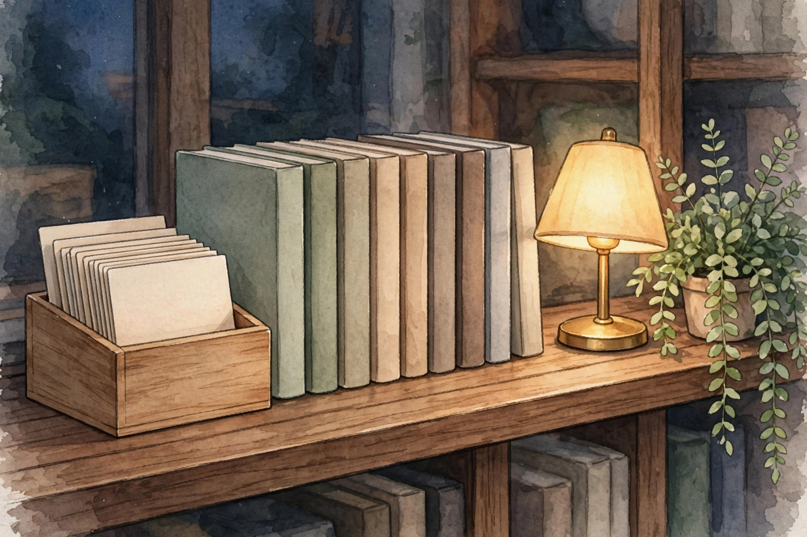

The Evening Index: Notes for Readers Who Like Their Shelf in Order
Every reading shelf drifts towards disorder if nobody tends it. A notebook borrowed for one evening stays out for a month; a card of notes, written in a hurry, gets filed under the wrong letter; and the page you most want to reread is always the one that has wandered. The evening index is our small defence against that drift: fifteen quiet minutes at the end of the day, putting each note back in its place while the day is still fresh enough to remember why it was written.
The habit began with traditional card games. A friendly game leaves behind more paper than people expect — the score of the evening, a rule that had to be settled, a sequence that worked beautifully once and never again. We started keeping one card per evening in a wooden box, much like the shelf above: date at the top, the players, the hands worth remembering, and one lesson written plainly at the bottom. The wider shelf that grew around those cards is gathered at all yono apps hub, where the notebooks stand in order and each one opens where the last one closed.
Order, we learned, is not the opposite of pleasure; it is what lets pleasure be found again. A sequence in a melding game is a kind of order too — three or more cards that belong together, laid down in their proper run. A set is another: different suits agreeing on one rank. When we write about a new corner of the shelf, the same instinct applies. Our our reading notes on the dhan game were filed the same way as everything else: first the history of the game as it reached us, then its rules in plain words, then the evenings it has given us, each in its own section, nothing mixed.
New readers sometimes ask where to begin, and the honest answer is: begin by watching. Watch one full round before joining any table. Notice how the discard pile tells a story, how a patient player gives away nothing, how the last three cards of a hand are usually decided long before they are played. Then read the shelf in the order it was built. A good place to see that order whole is a shelf page on all diwa apps, which gathers the neighbouring notebooks so a reader can walk the shelf from one end to the other without losing the thread.
There is no secret to the index itself. Cards in a box, notebooks in a row, one lesson per evening, written while the lamp is still warm. Kept nightly, the shelf stays honest; left for a month, it becomes archaeology. We prefer the nightly version — fifteen minutes, a tidy shelf, and the quiet satisfaction of knowing that tomorrow's reader, who is only ourselves a little older, will find everything exactly where it belongs.